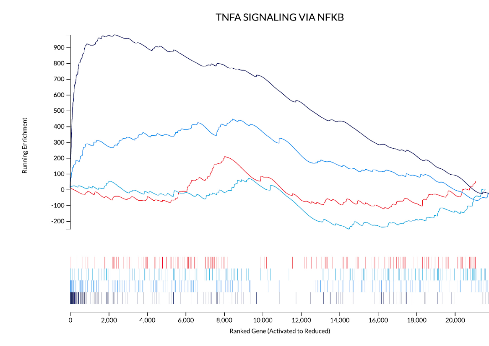
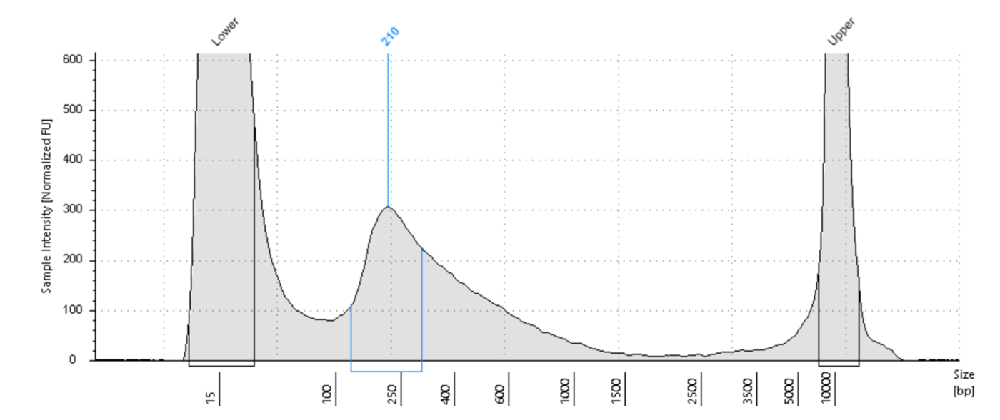
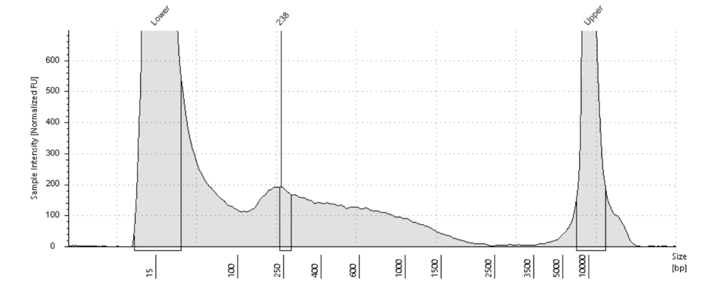

Accelerating biological experimentation relies on quickly deciding which experiment comes next. Picking the test that can fastest invalidate or support a hypothesis is a skill only human experts perform reliably today. To scale discovery past human capability, we have to evaluate and improve AI agents on it.
LabBench is 20 held-out tasks built from real wet-lab records in drug discovery and genomics. Each is a snapshot in time: the agent gets the records that existed at a decision point, and the lab’s interpretation and decision are withheld. It must commit to the next step, graded against 20–22 binary criteria tied to what the lab actually decided.
From lab archive to graded task
- MineFind recorded decisions and their evidence.
- AssembleGive the records; withhold the decision.
- Rubric20–22 binary criteria from the true answer.
- HardenRework tasks a solver passes trivially.
- ReviewBiologists verify every task.
The tasks come from real lab data unlikely to be recalled from the open internet. We expect the agent to navigate the evidence as a real researcher would, without the brief pointing to what matters.
Results
Five frontier agents each ran once per task in their vendor’s harness.
The best agents pass two in five criteria
Mean share of criteria passed; line is the 95% interval.
GPT-6 Astra and Claude Opus 5.5 tie, but Astra took a median 5 minutes per task to Opus’s 35.
Same score, seven times faster
Score against median minutes per task (log scale).
GPT-6 Astra 40.8%, 5 minClaude Opus 5.5 40.5%, 35 minGrok 4.7 29.6%, 14 minMuse Spark 1.3 28.2%, 4.5 minGemini 3.8 Flash 18.4%, 13 min
Agents fail the same criteria
182 of 406 criteria were passed by no agent; 31 by all five. What one frontier agent misses, the others usually miss too.
45% of criteria were passed by no agent
Criteria by number of agents passing them.
They interpret; they don’t choose
Agents excel at interpreting previous experiments: saying what a measurement is, declining an overclaim, reconstructing an analysis. Criteria that require choosing, committing or ranking pass 21% of the time, against 47% for identifying what something is. No agent passed any of the 13 criteria on which experiment should come first.
Choosing is the hardest move
Pass rate by what the criterion asks; “none” = share no agent passed.
Where agents differ
Astra leads on core decisions (52%), Opus on evidence integration (53%). On experiment design, the best agent passes 9%.
No agent can design the next experiment
% of each skill’s criteria passed (criteria count beside skill).
AstraClaude
Opus 5.5Grok
4.7Muse
Spark 1.3Gemini
3.8 FlashExperiment design 7039033Core decision 235243302617Measurement semantics 435644403328Evidential status 415149443912Method reconstruction 425043383338Comparison & baseline 404850323530Evidence integration 364753223611Scope & generalization 294852243121Quantitative reading 554542403116Confounds & data quality 273752443315
Deciding is harder than analyzing
% of criteria passed, by theme and task type.
GPT-6 AstraClaude Opus 5.5Grok 4.7Muse Spark 1.3Gemini 3.8 Flash
The knowledge is latent
A common issue with hard benchmarks is unreasonable criteria that make tasks effectively impossible. We tested this directly. On five core decisions no agent passed, we appended one sentence pointing at evidence GPT-6 Astra already had, without stating the answer. It passed all five.
One sentence flips the decision
GPT-6 Astra’s task score. The core decision flipped from fail to pass in all five.
Benchmark runWith one added sentence
One run per hinted task.
Drug response

Evidence
A compound triggers the strongest early NF-κB signature of four death inducers; nothing tests whether it drives death.
Agents
Four of five designed the NF-κB test, then ranked it second.
Hint
“Rank first the experiment that could tell a cause from a bystander.” Score: 4/20 → 15/20.
Assay development


Agents
All five chose the larger 238 bp peak and ignored the shoulder of uncut DNA.
Hint
“Judge each tagmentation trace by its whole size distribution…” The agent chose the lab’s condition.
The hints add no biology; they redirect attention. The models have the knowledge but do not reliably recall it.
Where experimental design breaks down
In biology, clock time is irreducible: cells grow and respond on their own schedules. That makes autonomous, correct experimental design arguably the single most important capability for superhuman AI in the lab. Models need a more cohesive world model of what experiments cost and what evidence would counter a hypothesis.
Discriminating experiments. After synthetic tests showed a new RNA-labeling chemistry worked, the lab isolated the two untested steps cheaply: copying across the join, and joining in cell lysate. Four of five agents ranked a step the lab hadn’t flagged first; none put the lysate test in its top two.
Cost. The lab planned to finish a small, already-started pilot and screen compounds only if the genotype signal repeated. No agent took this gated path; both leaders spent weeks on cell differentiation before confirming the signal exists.
Work with us
Gamow Labs has a team uniquely equipped to produce data at the frontier of AI and biological experimentation. We can produce representative tasks like these in volume, or hyper-specific lab data targeting a single type of reasoning, such as choosing the discriminating experiment, weighing experimental cost, or reading a specific assay. If you are interested in working with us, reach out.
Full methods are in the preprint. We’re also hiring.